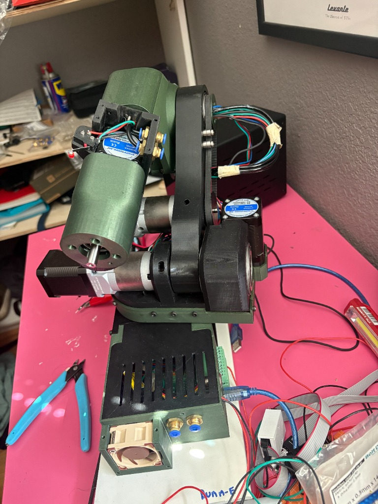
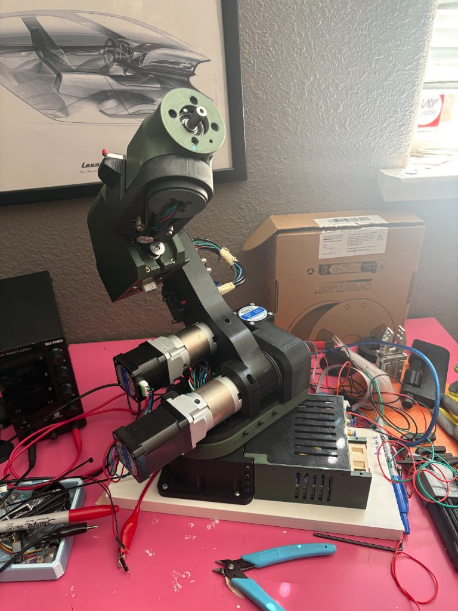

Research
I'm interested in building things, with a focus on hardware and software.

Designs and File Credit,
3D printed robotic arm by Source Robotics with improved ability for advanced manufacturing tasks. I started building this at the start of college, I thought it would be fun to figure out how to build an arm which can organize my desk and do other cool tasks. This arm is my entry into mechatronics: I learned how to configure software, wire, modify an open source project fully on my own. I also learned how hard it is to source reliable parts one example of this was the control board for the arm came from Croatia and the motors came from China. It took well over two months to completly take delivery of all the parts from the BOM. However this project has been an amazing learning experience and helped me realize my intrests in working on electro-mechanical systems.


Paper / CITRIS site / MAE UC Merced Article
As part of AIAA UC Merced, We participated in the Citris Aviation Challenge 2025 to build a simulation for determining viability of a UAV carrier accross 4 University of California Campuses: Berkley, Merced, Davis, Santa Cruz. We built a simulation using simulink and blender to simulate flight paths and pedestrian flow. As well as determining financial viabilitiy of the project. We Placed 3rd bringing home the CITRIS exellence award.
Serving as the Software Lead for UC Merced's Cube Satellite research team, guided by Dr. Erin Hestir, where our primary mission focuses on detecting algae blooms utilizing an advanced hyperspectral camera. My core responsibilities include designing and developing both the Ground Station and Satellite Flight Software, meticulously adhering to NASA's rigorous programming standards to ensure optimal robustness and reliability in orbit. Additionally, I perform comprehensive trade analyses on crucial software libraries, including Real-Time Operating Systems (RTOS) and communication protocols, to effectively optimize for both memory constraints and power efficiency.
Programmed a sophisticated drone-based facial recognition platform from the ground up, utilizing the power of OpenCV and Python for computer vision tasks. The core of this system involves a highly responsive real-time object tracking algorithm that seamlessly interfaces with the drone's hardware. This integration enables fully autonomous flight camera control and precise dynamic targeting, showcasing practical applications of autonomous robotics and computer vision in real-world scenarios.
Took on a leadership role as the Student Manager for a High-School Engineering space, where I was responsible for the setup, maintenance, and day-to-day operations of the facility's 3D printers. In this capacity, I actively assisted instructors by developing comprehensive instruction manuals for a variety of low-cost, engaging engineering assignments. These educational projects spanned multiple disciplines, including constructing hydraulic lifts, teaching fundamental CAD techniques, and guiding students through introductory Arduino programming and electronics.
This semester I am currently taking the following courses: Algorithm Design and Analysis, Mechanical Physics, Music Language and Cognition, Critical Race and Ethnic Studies. Alongside working as a Math Learning Assistent where I assist in lecture as well as tutor students during office hours. During my free time I am focusing on learning Verilog, PCB Design, and experimenting with open source software.
Website Format Credit John Barron.